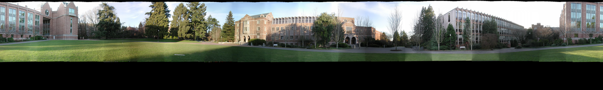

Josh Hagins and Will Bartlett (jdh298 and wab73)
Panorama 1: Botlab (handheld)
Click on image for full size
Panorama 2: Quad

Click on image for full size
Panorama 2: Quad Homography No Warp
Click on image for full size
What we learned
We learned a lot of things about panorama stiching from this project, though our code wasn't perfect.
- SIFT showed little improvement over our other feature matching strategy.
- Blendwidth has significant impact over the Panorama. Lower blendwidth (~10-20) yield much more ghosting and lower quality images. Too high blendwidth results in a very blurry image with much fewer ghosts and artifacts.
- Complex computer vision algorithms need not be slow, we were happily surprised at the performance
- The homographies were very powerful, but did not perform quite as well as the spherical warping, especially at the top or bottom of the image where radial artifacts are visible
- Though we ran out of time to implement exposure correcting code, we discussed how to do it with average brightness values, or brightness values in the immediate area around matched features. We also dicussed equating the brightness in the overlapped region after feature matching and aligning had been done.
{kind=link}
{kind=link}
{kind=link}